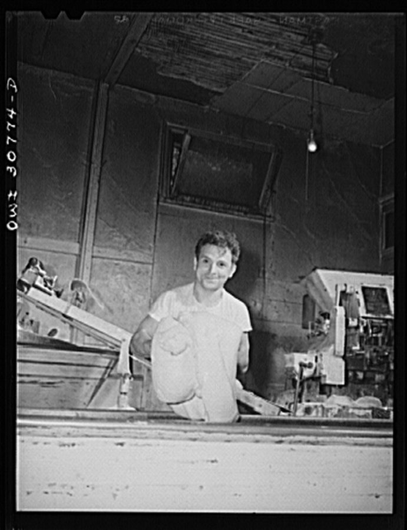
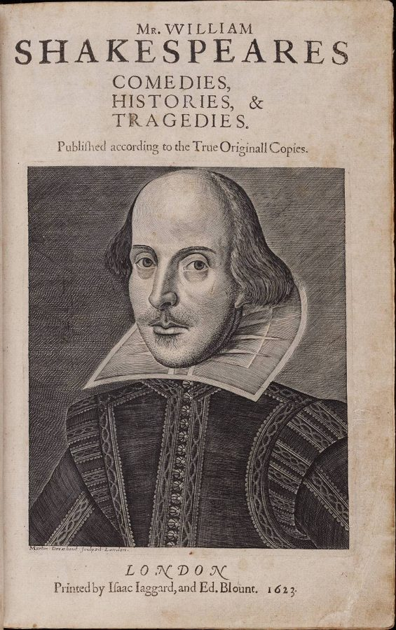

读之前
这一页是报告 10：4 月 21 日到 28 日，六条。拼写和标点已经没有问题，往后要留意的是他的口气，和他看人的眼光。读的时候抓两条线：一条是他在面包店、实验室、大学校园里的位置，别人怎么看他，他又怎么看别人；一条是回忆，这一页有两段很长，都是用「他」来写小时候的自己，留意哪些记得清楚、哪些一直模糊。
手术后六个星期左右。拼写、标点已经全对，智商到了 100 上下，过几个星期要开始学大学课程。愚人节那天起他管揉面机，涨了工资。4 月 10 日那条写的派对上，他明白了面包店的人一直在拿他取乐。每周两次去 Strauss 那里谈话，想起了小时候的事：妹妹出生后妈妈打他，十一岁送 Harriet 小金盒挨了打。第二次墨迹测验时他发了火，开始想把一些报告留着不给人看。
读的时候带着这几个问题。不用先找答案，读完回来对照「检查一下理解」。
面包店里的人对查理是什么态度？查理怎么解释？你同意他的解释吗？§1 §2
两段长回忆里，查理说自己记得清的是什么，看不清的是什么？§1 §6
查理怎么看实验室里的人、怎么看大学里的学生？和报告 9 比，他的眼光变了没有？§3–§5
分节地图
这一页有六条带日期的报告。读完一条打个勾；每条下面的英文是那一条开头的几个词，在 Kindle 里搜它就能跳过去。没读的那几行先模糊着，免得提前看到情节，点一下就能看清。全页约 4500 词，一次读完。
4 月 21 日约 2100 词 I figured out a new way … 留意现在的同事和回忆里的同事，对查理有什么不一样。 4 月 22 日约 100 词 People at the bakery are changing. … 只有两段。留意他怎么解释别人的态度，最后想做什么。 4 月 24 日约 600 词 Professor Nemur finally agreed with Dr. … 先是报告的新规矩：谁读、什么时候读。后半留意他怎么看实验室的两个人。 4 月 26 日约 200 词 I know I shouldn’t hang around … 下了班他去了哪里。留意他带着什么、学着什么样子。 4 月 27 日约 300 词 I’ve made friends with some of … 一桌学生的争论。留意哪一句话让他害怕，他从中得出什么。 4 月 28 日约 1300 词 In a dream last night I … 先是一个梦，接着梦后面的事浮上来。留意哪些看得清，哪些一直模糊。
背景：书里默认你知道的事
按在书里出现的顺序排，标题前是节号。人名后面括号里是中译本的译名，读者想对照译本时用。
§1 作坊里的人这一页的头一条又回到唐纳面包店后面的作坊。rolls 是小餐包，一个个从大面团上切下来，用手搓成形，再撒面粉、排进烤盘。查理原来在这里扫地、送货，4 月 1 日起管揉面机。下面几张卡片只写你此刻已经知道的。
Mr. Donner 唐纳先生 店主。4 月 1 日让查理接手揉面机，给他涨了 5 元周薪。报告 1 里查理的周薪是 11 元。
Gimpy 金皮 面包师傅的头儿，走路一瘸一拐，原文有时省称 Gimp。以前不许查理靠近揉面机，说会伤着他。
Frank Reilly、Joe Carp 弗兰克·赖利、乔·卡普 作坊里的同事。报告 9 里请查理去派对、看他跌倒发笑的就是他们。

1943 年 6 月，Marjory Collins 拍的一家立陶宛面包房里的意大利裔面包师 Michael Spinella（据图片标题）。和本书无关，只看那个年代作坊的样子。Marjory Collins，公有领域，维基共享资源 §1 漫画书漫画书（comic book）是 1930 年代在美国流行起来的彩色小册子。Batman（蝙蝠侠）1939 年 5 月在 Detective Comics 第 27 期第一次出场，少年搭档 Robin 1940 年 4 月的第 38 期加入。人物说的话写在头顶的白色气泡里：不识字的人能看画，看得出谁在说话，却读不出说的是什么。
§1 moron、feeble-minded：当时的分级用词20 世纪上半叶，美国把智力障碍分成 idiot、imbecile、moron 三级，feeble-minded（低能）是总称。moron 是心理学家 Goddard 1910 年提出的，指最轻的一级，最初按「心智年龄」划，后来按智商算大约是 50 到 70。Goddard 当时在新泽西的 Vineland 训练学校（Training School）当研究主任：收容智障者的机构常叫「学校」「训练学校」。这些词后来都成了骂人的话，今天说智力障碍（intellectual disability）。
§3 实验里的人这一页有一条写在实验室。出场的人你都见过，下图只画你此刻知道的。
Welberg 基金会 出钱（虚构）
Nemur 教授 项目的头，心理学
Strauss 医生 精神科兼神经外科
Burt Selden 研究生，做测验
Miss Kinnian 成人班老师
查理 写进步报告
Algernon 先做了手术的老鼠
每周两次谈话
教
测验
报告复印后 Nemur 读
本站示意图：到报告 9 为止读者知道的实验里的人。Beekman 大学和 Welberg 基金会都是书里虚构的。 §3 精神外科精神外科（psychosurgery）指用脑部手术治疗精神疾病。1935 年葡萄牙医生 Moniz 主持了第一例前额叶白质切断术，1949 年因此得了诺贝尔奖；美国的 Freeman 和外科医生 Watts 把它改称 lobotomy，大力推广。1950 年代抗精神病药氯丙嗪出现（美国 1954 年批准）以后，这种手术很快少了，后来名声很坏。书里给查理做的手术是虚构的，和脑白质切断不是一回事。
§4 大学校园Campus Bowl 是书里校园边上的一家小餐馆，luncheonette 指卖简餐、咖啡的小店，学生常在那里坐着争论。freshman beanie 是一年级新生戴的小圆帽，也叫 dink：20 世纪初起，不少美国大学由高年级生规定新生要戴。Penn State 从 1906 年开始，新生见了学长还要碰帽檐致意。后来因为被看作欺负新生，各校陆续取消。
§5 莎士比亚是谁莎士比亚（1564–1616）没有上过大学，生平留下的记录也不多。19 世纪起有人怀疑剧本另有作者：1857 年美国人 Delia Bacon 出书，说是哲学家培根（Francis Bacon）等人写的；1955 年美国人 Calvin Hoffman 出书，说是同时代剧作家马洛（Christopher Marlowe）写的。主流学者不接受这些说法。2016 年新版牛津莎士比亚全集把马洛列为《亨利六世》三部的合作者，那是合写，不是代笔。

1623 年出版的莎士比亚戏剧集（第一对开本）书名页，肖像是 Martin Droeshout 的铜版画。Martin Droeshout，公有领域，维基共享资源 词与短语
三类：紫边的「查理拼的」是他拼错的词，先写还原的拼法；黄边的「每个字都认识」是熟词生义、俚语、别人话里的弦外之音；其余是这里用法特别的词。斜体小字是原句里的几个词，在 Kindle 里搜它就能找到原文，拼错的照拼错的抄。
这一页查理已经不拼错了，所以没有紫边的词条。
§1 4 月 21 日
kid around
… any more, or kids around the way …
说笑，逗着玩
kid 作动词是「开玩笑」，kid around 是一起说说笑笑、打打闹闹。这句的主语是 Nobody，kids 是动词，不是「小孩」。译本：「路上的小孩也避开我」。把 kids 读成了名词。
fall asleep standing up
… the time I fell asleep standing up …
站着睡着了
standing up 说的是睡着时的姿势，不是「站起来」。报告 9 里 4 月 13 日那段回忆，也停在被人从下面踢掉了腿。译本：「我很困地站起来时」。把站着睡着了读成了困着站起来。
pick on
… do you always gotta pick on him?
欺负，老找（某人）的茬
gotta 是 got to 的口语拼法。这句是 Gimpy 冲着 Frank 说的。
not know any better
… He don’t know any better. Do …
不懂事，分不清好歹
know better 是「懂道理、知道不该这样」。Frank 的意思是：查理不懂，所以捉弄他也无所谓。Gimpy 在第 10 段回了一句 But you know better：可你是懂的。两人用的是同一个说法。He don’t 是不合语法的口语。
orthopedic boot
… clumping over on his orthopedic boot, …
矫形靴
给脚或腿有毛病的人特制的鞋。clump 是穿着重鞋走路「咚咚」响。报告 9 里写过 Gimpy 一瘸一拐地绕着揉面机走。
you’ve got something there
… “Maybe you got something there. Hey, …
你这话有点道理
不是「你那儿有个东西」，是「你说到点子上了」。口语里常省掉 have。
moron
… If a moron can’t learn maybe …
「低能者」（当时的用词）
见「背景」。当时既是一个分级名称，也已经是骂人的话；今天两种用法都不这么说了。
good-luck piece
… a nice new shiny good-luck piece …
幸运物，护身符
piece 在这里是「一件小东西」。Gimpy 拿出来的其实是一块印着广告字的铜片。
STA-BRITE METAL POLISH
… disc that says STA-BRITE METAL POLISH. …
（一种）金属上光剂（的牌子）
Sta-Brite 像是 stay bright（一直亮）的广告式拼法。上光剂是给铜器、银器擦亮用的。译本：「永光牌金属抛光剂」。给牌子起了个中文名，「永光」把 stay bright 的意思带出来了。
It don’t stick.
… said Frank. “It don’t stick.”
记不住，学了留不下
stick 是「粘住」，口语里说学过的东西「留在脑子里」。紧接着下一段，查理心里想的是 He wants it to stick。
cutter
… taking the cutter out of his hand.
切面团的刀
就是第 34 段 Gimpy 塞到他手里的那把 knife，这里换了个叫法。
big baby
… “Go on, you big baby,” snorts …
大孩子，长不大的家伙
说一个大人「像小娃娃」。可以是骂，也可以带点无奈的疼爱，看口气：这时 Gimpy 刚刚笑了。
balloon
… words in the white balloons above …
（漫画的）对话框
漫画人物头上装台词的气泡，英文叫 balloon 或 speech balloon。见「背景」。
come a long way
… I’ve come a long way since …
进步了很多
不是「走了很远的路」，是从当初到现在变化很大。
§2 4 月 22 日
baker’s union
… me to join the baker’s union, …
面包工人的工会
工会替会员和老板谈工资、工时。
the rotten thing is
… The rotten thing is that all …
糟糕的是
rotten 本义是「腐烂的」，口语里是「糟透了」。
get up the nerve
… If I can get up the nerve.
鼓起勇气
nerve 这里是「胆量」，不是神经。
§3 4 月 24 日
keep back
… allowed to keep back some of …
先扣着，暂不交出
不是「退后」。back 在这里是「留在手里」。
drop by
… I dropped by the office earlier …
过去一趟
convention
… informed the convention committee that we …
（学会的）年会，大会
convention 也是「惯例、公约」。美国各种专业学会每年开的大会叫 convention，committee 是筹办大会的委员会。
present a paper
… we will present the paper at Chicago.”
在会上宣读论文
present 是「宣读、报告」，paper 是「论文」，不是「拿出一张纸」。
interim report
… justified in making an interim report. …
中期报告
实验还没做完时，先报告一部分结果。
bring something out into the open
… bring it out into the open prematurely. …
公开出来
the open 是「众目之下」。prematurely 是「过早地」。
come under fire
… whole hypothesis will come under fire.”
遭到猛烈批评
本义是「遭到炮火」。
regression
… I’m not afraid of regression any …
倒退，回退
这里指实验的效果退回去。
have one’s eye on
… Nemur had his eye on the …
盯上了，想得到
Chair of Psychology
… the Chair of Psychology at Hallston, …
心理学讲席（一个教授职位）
大学里的 chair 是有名号的教授职位，也指系主任，不是会议的「主席」。Hallston 是书里的大学；1959 年的中篇里这里写的是 Princeton。译本：「哈尔斯敦的心理学会主席职位」。把大学里的教职读成了学会的会长。
ride on someone’s coattails
… was riding on the coattails of …
沾别人的光往上爬
coattails 是礼服后面的长下摆。抓着别人的衣摆被带着走。
psychosurgery
… his techniques in psychosurgery and enzyme-injection …
精神外科
见「背景」。后面的 enzyme-injection patterns（酶注射的方案）是书里虚构的技术。
opportunist, cynic, pessimist
… each other names—opportunist, cynic, pessimist—and I …
投机分子、愤世嫉俗的人、悲观派
三个骂人的词。原文没说哪个词是谁骂谁的。
feeble-minded
… I was too feeble-minded to know …
「低能」（当时的用词）
见「背景」。查理拿这个当时的分级用词说从前的自己。
§4 4 月 26 日
luncheonette
… in the Campus Bowl Luncheonette when …
小餐馆（卖简餐、咖啡的）
Campus Bowl 是这家店的名字。见「背景」。译本：「波尔校区的餐馆」。Campus Bowl 是店名，不是一个校区。
listen in on
… Sometimes I listen in on the …
在一旁听（别人说话）
对方不知道或没邀请你，你在旁边听着。
§5 4 月 27 日
that business about
… didn’t believe that business about Marlowe, …
关于……的那一套说法
business 在这里是「事情、那档子事」，带点不屑，和生意无关。
freshman beanie
… the one with the freshman beanie …
新生帽
见「背景」。这个学生没有名字，查理用帽子称呼他；前面那个胖学生也是按长相称呼的。
get one’s hands on
… everything I can get my hands on …
弄到手
Dostoevski
… fiction now—Dostoevski, Flaubert, Dickens, …
陀思妥耶夫斯基
旧一些的英文拼法，今天多拼作 Dostoevsky。不是查理拼错。
§6 4 月 28 日
be somebody
… someday and he’ll be somebody.”
成为有出息的人
somebody 作名词是「重要人物」。这一段里同一句话喊了两遍，第一遍的 somebody 原文是斜体。
Training School
… Warren State Home and Training School. …
（州立的）智障者收容机构
见「背景」。名字里有 school、training，说的不是职业学校。Warren 之家手术前就出现过。
bun
… Her hair is up in a bun, …
发髻
bun 也是小圆面包。头发在脑后盘成一个圆髻。
pecking
… tired to escape her pecking.
（鸟）啄；（妻子对丈夫的）数落
接着前面「像一只大白鸟」的比方。henpecked（被母鸡啄的）是「怕老婆」的意思。译本：「避不开她的扑啄」。鸟的比方保住了。
spinner
… playing with his spinner, bright colored …
转珠玩具
一根绳子穿着彩色的珠子和圈，拧紧再放开就转。报告 9 里 4 月 13 日的回忆，作坊里的查理也想着他的 spinner。
dummy
… “He’s not a dummy. He’s normal. …
傻子
dummy 也指假人、替身。
do it in one’s pants
… you dare do it in your pants.”
拉在裤子里
do it 是对孩子说的委婉说法。后面几段的 make in his pants 也是同一个意思。
That bitch a teacher?
… “That bitch a teacher? Oh, I’ve …
那个贱人也配叫老师？
「X 也算 Y？」的反问，省掉了动词 is。很粗的话。
board of education
… write to the board of education.
教育委员会
管一个城市公立学校的机构。
keep out of this
… “Keep out of this. He’s perfectly …
你别插手
march
… Now march right into that bathroom …
（命令口气）给我走进去
march 本义是「齐步走」。大人对小孩下命令时常用。
查理的文字
切到「拼错的词」：这一页整页都是零。拼写这件事在报告 9 里已经过去了，这一页看的是别的。
切到「长词」：4 月 24 日冲到目前为止最高。那一条里多的是 interim、prematurely、hypothesis、psychosurgery，他在转述 Nemur 和 Strauss 的话，用的是他们的词。切到「句长」：这一页里 4 月 26、27 日最长，一句里罗列一串名字，还用上了「像教堂大钟一样回响」这种比方。
再看称呼。4 月 21 日还写 Mr. Donner，第二天就只写 Donner。4 月 24 日他在自己的叙述里第一次叫老师 Alice Kinnian（报告 5 里这个全名只出现在 Burt 的话里），同一条的最后又回到 Miss Kinnian。回忆里，小时候的自己是 Charlie、是「他」；最后一段，父亲成了 Matt Gordon。
记忆拼图
查理的童年是一段一段想起来的。每段一张卡片：想起了什么，是被眼前的什么勾起来的。年纪是从书里推的，推不出来的写「年纪不详」。读过的页的卡片会汇总到记忆拼图 ，按年纪排好。
搓面包卷，和一块铜牌 在作坊里站着睡着，Frank 把他踢倒，Gimpy 替他说话。Frank 提议教他搓面包卷，Gimpy 接手，拿一块亮铜牌当奖品。跟着做，他做成了六个；轮到自己做，全忘了。后来 Gimpy 还是把铜牌丢给了他。是同事们开始怕他、躲他时勾起来的。
§1 厨房里的争吵 六岁，妹妹还没出生。妈妈坚持他正常，要他回 P.S. 13 重读；爸爸说别再假装了。妈妈打掉他的转珠玩具，逼他一个人去厕所，他没忍住。妈妈要打他时，爸爸转身出了门。是梦见妈妈在校长办公室喊「他会上大学」之后想起来的。
§6
现在 4 月下旬
4/21
4/28
梦 面包店里 年纪不详 6 岁 搓面包卷
校长办公室
厨房里的争吵
本站示意图：这一页的现在（上面的线）和查理想起的事。4 月 28 日那一段是先做了梦，醒来顺着梦想起了真事。 值得停下来的句子
not gods or even heroes, but just two men worried about getting something out of their work.— §3，4 月 24 日，在实验室门外听了一阵之后。本站译：不是神，连英雄都算不上，只是两个惦记着从工作里捞点什么的人。
三天前的 4 月 21 日，他还写自己的变化全都归功于 Strauss 医生和 Nemur 教授。这一句他把他们往下放：从神、英雄，一路放到「两个人」。可紧接着他又替他们找了个理由：只要 Nemur 说得对、实验成功了，又有什么关系？本站读来，他看清了，却还不愿意就此看低他们。
Suddenly, I remember that her name is Rose and his name is Matt. It’s odd to have forgotten your parents’ names.— §6，4 月 28 日，那段回忆的结尾。本站译：我忽然想起来，她叫 Rose，他叫 Matt。连自己父母的名字都忘了，真是怪事。
回忆里爸爸的台词喊过好几次 Rose，可查理自己叙述时只写「妈」「爸」「她」「他父亲」：声音记下了，名字到最后才「想起来」。名字一回来，口气也变了：下一句他问 Norma 呢，再往后把父亲叫成 Matt Gordon。本站读来，这像在说一个外人。脸还是看不清，这一页的最后一句就是这个。
读完想一想
1. 面包店的人以前拿查理取乐，现在怕他、躲他。查理说「某种意义上不能怪他们」。你觉得他们怕的是什么？
本站的看法 本站的看法：怕的可能不只是查理本人。一个十七年里谁都可以捉弄的人，忽然比他们懂得多、干得好、工资涨得快，他们原来在店里的位置就跟着动了。查理自己的解释是「他们不明白我出了什么事，我也没法告诉他们」：手术要保密，这确实是一半的原因。你也可以想想 Gimpy 那块铜牌：同一个人，当年既拿他做实验，也心软过。
2. 查理在门外听了一阵，忽然觉得自己「没有权利」再听下去：以前他听见什么，别人都不在乎。你觉得他该不该把听到的事告诉谁？
本站的看法 本站的看法：这一刻他意识到的不只是礼貌。从前他像屋里的一件家具，人们当着他的面什么都说；现在他是一个会听懂、会记下来的人，听见了就得自己掂量。可他听到的事恰恰和他自己有关：要不要在六个星期后公开发表的，是他这个人。他有没有权利知道，这个问题书里还没回答。
3. 回忆里，妈妈坚持他「正常」、逼他学；爸爸劝她别再假装，可在最要紧的时候转身走了。你怎么看这两个人？
本站的看法 本站的看法：书没有替谁说话。妈妈的「他会上大学」是爱，也是不肯接受；她的办法是打和逼。爸爸看得更清楚，也替孩子求情，可他的办法是走开。查理隔着二十多年想冲他们喊「看看他」：两个人都在吵查理，谁也没在看查理。妈妈喊的是「他会上大学」，而前一天他刚在大学的小餐馆里想：这正是我想要的。
对照今天
成立 后来的事实印证了这个说法部分成立 一部分对，一部分被后来的事改了被改写 后来的事实推翻了它，或者完全变了样书里的说法：他没有能力在普通班上课（老师的判断，Matt 转述，§6）
书里 六岁的查理在 P.S. 13 跟不上。爸爸转述老师的话：他读不了普通班。妈妈要他九月回去把这学期重读一遍。梦里的校长则要把他送去特殊学校、送进州立之家。
当时 美国许多州的法律允许学校拒收或劝退被认为「教不了」的孩子。这样的孩子要么待在家里，要么进收容机构；能留在普通班的，常常只是坐着等年龄到了退学。
今天 1975 年美国通过《全体残障儿童教育法》（PL 94-142，1990 年改名 IDEA）：残障孩子有权在公立学校受适合他的免费教育，而且要尽可能和普通孩子一起上学，只有普通班加上辅助也办不到时，才分到特殊班或特殊学校。老师那句判断今天也可能成立，变的是后面那一步：学校得想办法教他，不能把他推出门。核对于 2026-10。依据：PL 94-142（1975）及 20 U.S.C. §1412(a)(5)，美国最高法院 Rowley 案（1982）引用的众议院报告。
书里的说法：让孩子一个人去上厕所，能给他自信和成就感（Rose 引「书上说」，§6）
书里 六岁的查理怕那间冷冰冰的厕所，伸手要妈妈带。Rose 说书上讲自己去能给他自信，警告他拉在裤子里就要挨打。书里没说是哪本书。
当时 20 世纪上半叶，美国的育儿指导讲究规矩和时间表。1962 年儿科医生 Brazelton 在《儿科学》（Pediatrics）上提出「以孩子为主」的办法：等孩子身体和心理都准备好再练，大人不逼。
今天 让孩子学会自己上厕所，今天仍是目标，「自己做到」确实能让孩子有成就感。但通行的建议是看孩子准备好了没有，态度正面、前后一致，出了意外不骂。Rose 那套「怕也得去，拉了就打」，正是这些建议劝人别做的。专门比较各种训练方法的研究其实不多。核对于 2026-10。依据：Brazelton（1962），Kiddoo 在 CMAJ 的评论（2012），美国国家医学图书馆 MedlinePlus 的如厕训练建议。
检查一下理解
先在心里答，再点开。答错的那题，回书里把对应那一条再读一遍。
1.（§1）回忆里，在作坊里把查理踢倒的是谁？报告 9 里这段是怎么写的？ 是 Frank。报告 9 里 4 月 13 日的回忆只写到「有人」从下面踢掉了他的腿；这一页他想起了是谁，还想起 Gimpy 当时替他说话。
2.（§1）Gimpy 答应查理，学会了就给他什么？他学会了吗？最后呢？ 一条铜链子上挂着的亮铜片，上面印着金属上光剂的牌子。查理跟着做成了几个，自己做时全忘了。Gimpy 后来还是把它丢进了他怀里，查理到现在才想到问：他为什么这么做？
3.（§3）报告的规矩改成了什么？ 查理可以先把一些私人的报告留着不交。但给 Welberg 基金会写最终报告之前，Nemur 要把全部报告读一遍，决定哪些拿去发表。
4.（§3）Nemur 和 Strauss 在争什么？ Nemur 已经告诉大会委员会，要在芝加哥的年会上拿出一份中期报告。Strauss 认为六个星期以后发表还太早，查理还在变；话说过了头，他们的整个假设都会挨批。后来又扯到谁的功劳大、谁想要 Hallston 的教职。
5.（§5）学生们争论莎士比亚的剧本是谁写的，提了哪几种说法？ 胖学生说是马洛；Lenny 说是培根，理由是莎士比亚没上过大学；戴新生帽的说，在厕所里听人讲是一位女士写的。
6.（§6）梦里和回忆里，妈妈坚持什么？爸爸坚持什么？ 妈妈坚持他正常，将来会上大学、会出人头地，九月回原来的学校重读一学期。爸爸说别再假装了，老师说他跟不上普通班，像训练动物那样逼他，对谁都不公平。
用一句话说这一页：
精彩回顾
隔几周回来，先看这几张卡片。想不起来的那张，点节号回到这一页，再回书里那一条。
一句话： 查理开始看清身边的人：怕他的同事、争功的 Nemur 和 Strauss、记忆里的父母，可父母的脸还是看不清。
It don’t stick 回忆里 Gimpy 和 Frank 教他搓面包卷，旁边有人下注。跟着做成了六个，一个人做就全忘了。他想要那块亮晶晶的铜牌，也想让他们喜欢他。
§1 被丢进怀里的铜牌 没学会，Gimpy 还是把铜牌丢进他怀里，一瘸一拐地走了。如今查理才想到：那是件好事，他为什么要那样做？
§1 门外的争吵 想去问能不能请 Miss Kinnian 看电影，却在门外听见 Nemur 和 Strauss 为要不要在芝加哥提早发表吵起来。他第一次觉得，他们只是两个想从工作里得到点什么的人。
§3 烟斗和 Campus Bowl 下了班不回家，夹着书、抽起烟斗，在学生的小餐馆里旁听。听他们争莎士比亚是谁，第一次听人说也许没有上帝。
§4–§5 被打掉的转珠玩具 六岁，厨房里，爸妈为他吵。妈妈把他手里的转珠玩具打掉，逼他自己去厕所。他没忍住，爸爸走出了家门。
§6 Rose 和 Matt 回忆的最后，他忽然想起父母的名字。三十多岁的人，忘了自己爸妈叫什么。他们的声音很清楚，脸还是模糊的。
§6